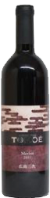
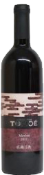

ワイングラス
テイスティングを楽しみながらグラスを選びませんか？専門のスタッフがあなたにぴったりのワイングラスをご提案。オーダーも受け付けています。
食事とお買い物
ワインの販売とあわせ、ジューススタンドやジェラート・チーズ工房など、全ての方に楽しんでいただける商品をご用意しています。
撮影スポット
30分〜1時間のガイド付きワイナリー見学コースと、季節によって表情を変える、自然の魅力たっぷりの撮影スポットをご紹介します。
施設案内
ワイナリー最新情報と駐車場案内、そのほか広大な敷地内にある様々な周辺施設をご紹介します。


 
